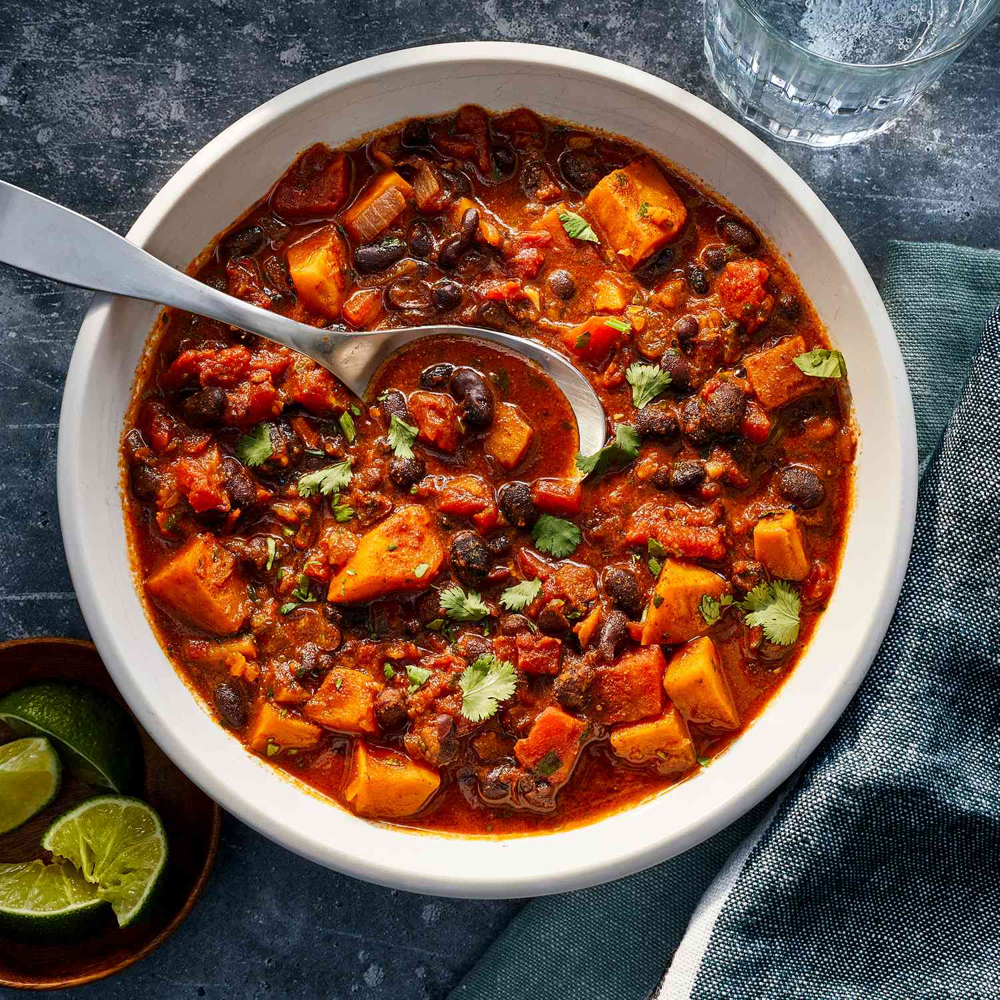
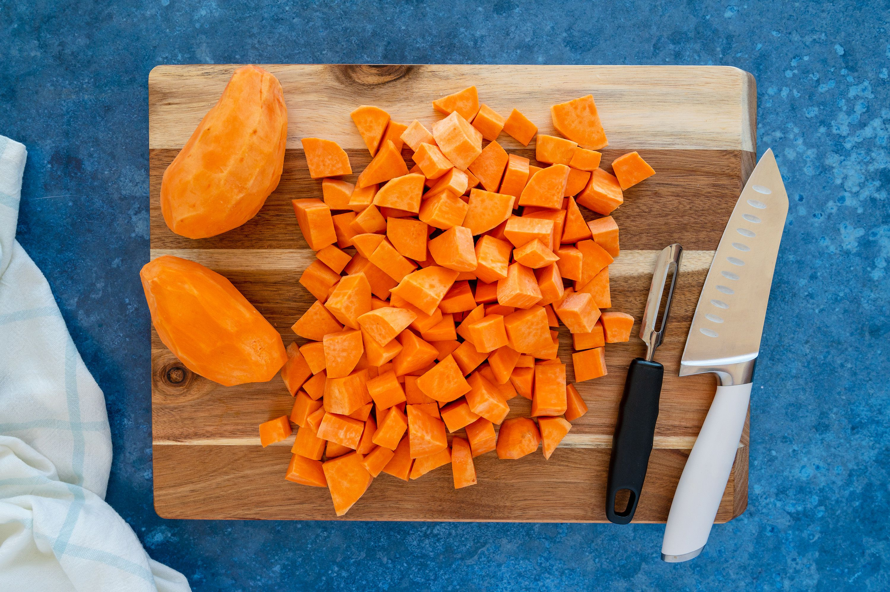
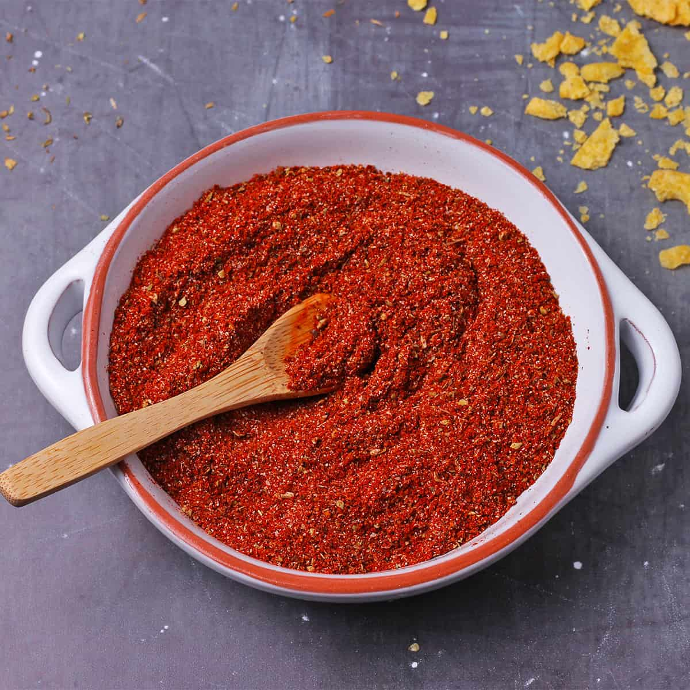
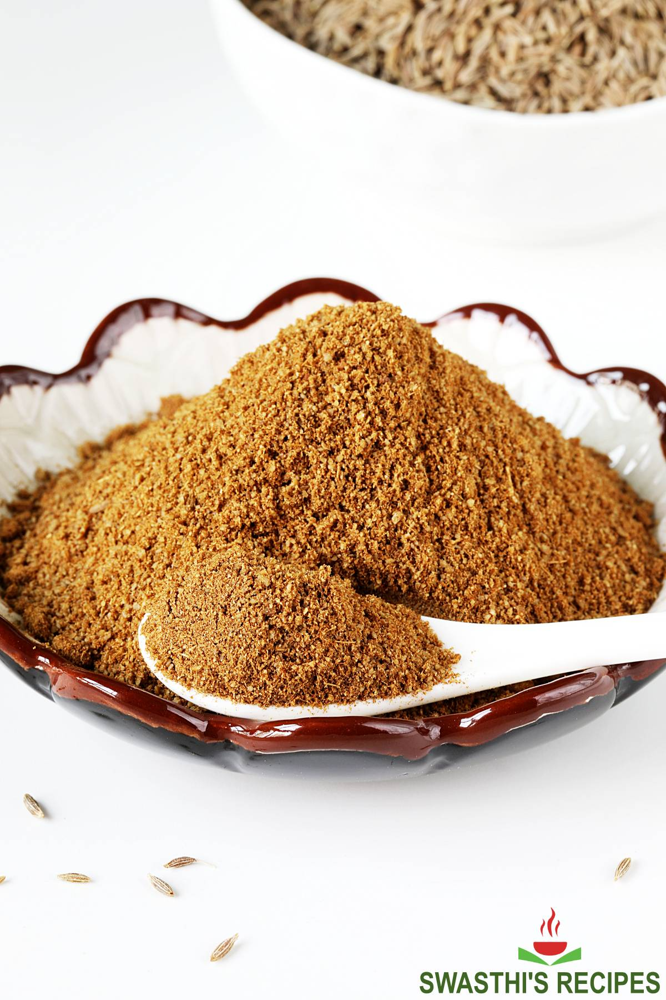
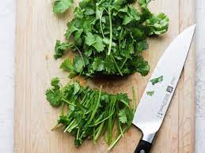

Sweet Potato & Black Bean Chili



1 med sweet potato,peeled & diced 1/4 grated onion
1/4 grated onion

2tbs OF CHILLI POWDER
4tbs OF CUMIN POWDER 4 teaspoons lime juice
4 teaspoons lime juice
 1 diced tomato
1 diced tomato
 4 CLOVES GARLIC
4 CLOVES GARLIC

½ cup chopped fresh cilantroServing Size: 4
Servings Per Recipe: 4
Serving Size: 2 cupS
Calories: 323
| Nutrient | Amount | % Daily Value * | Total Carbohydrate | 55g | 20% |
|---|---|---|
| Dietary Fiber | 16g | 56% |
| Total Sugars | 13g | 0% |
| Protein | 13g | 25% |
| Total Fat | 8g | 10% |
| Saturated Fat | 1g | 6% |
| Vitamin A | 12409 IU | 248% |
| Vitamin C | 24mg | 27% |
| Folate | 118mcg | 29% |
| Sodium | 53mg | 25% |
| Calcium | 164mg | 13% |
| Iron | 5mg | 29% |
| Magnesium | 42mg | 10% |
| Potassium | 1073mg | 23% |